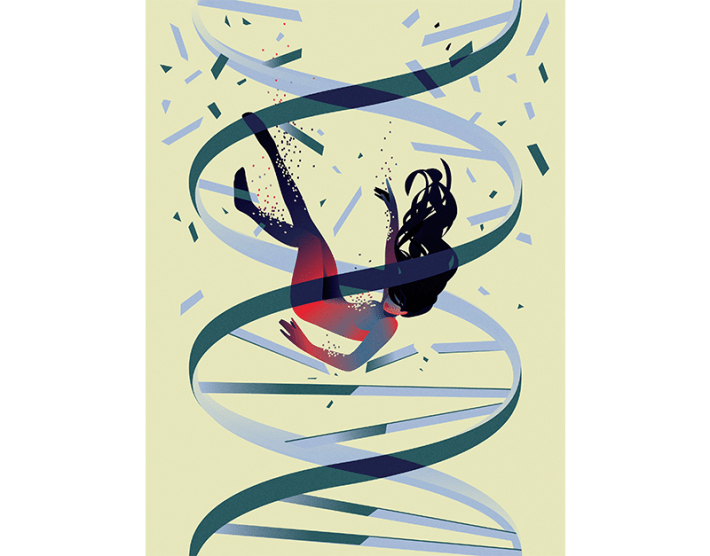

It’s impossible to know exactly when each of the five mutations happened. When, deep in my marrow, one thing after another went awry, and divided my life. Like all people who have been ill, my life is split into Before and After. The mutations must have happened in the Before, because that’s how leukemia works.
Did a mutation occur the summer Before, when my gallbladder inexplicably started to act up, when I got a surprisingly terrible case of hand-foot-mouth virus for an adult? Perhaps one occurred in college, silently changing my future while I took my first organic chemistry lab, casually flirting with my graduate TA and being careless with a solvent. Maybe the first mutation occurred when I was 2 years old, wearing footie pajamas soaked in flame retardant, as was the norm in the mid 1970s. Is it possible, even, that the mutation happened generations before I was even born, perhaps when my grandmother worked in her family’s dry-cleaning shop, the chemicals triggering a change deep in one of her cells that eventually lead to her death, my father’s, and nearly mine? Buried in these questions is, of course, the deeper question of why. It is even more unknowable than when.
Nautilus premium members can listen to this story, ad-free.
Nautilus members can listen to this story.
Since my diagnosis in March 2013, science has leaped forward in understanding how leukemia, or blood cancer, forms. All blood cells are born from a particular type of stem cell found in the bone marrow called a hematopoietic stem cell. Over five generations, hematopoietic stem cells differentiate into red cells, carrying oxygen; platelets, allowing clotting; and the myriad types of white blood cells, mounting immune responses.
HER OWN SLEUTH: After she was diagnosed with leukemia, Alison Spodek, an associate professor of chemistry and Director of Environmental Studies at Vassar College, became determined to uncover the genetic suspects behind it. Photo by Karl Rabe / Vassar College.
Diagrams of this process look like a family tree, with one ancestor spawning many different descendants. The ancestor cell is pluripotent, meaning it can form all types of blood cells; each generation down is a little less powerful, and a little more specific. Some generations become stem cells for one or more specific cell types. The final generation are our blood cells that are constantly dying and being replaced, unable to have offspring of their own. The constant cycle of blood death and replacement makes blood donation possible and explains why every person has, and needs, hematopoietic stem cells.
The process of each generation of hematopoietic cells becoming something new relies on the central dogma of molecular biology. This dogma states that genes are found on DNA and encode instructions; when these instructions are transcribed, they become RNA, which in turn is translated into proteins. If the gene, found on DNA, is a blueprint for a doghouse, the RNA is the shopping list you take to the hardware store, and the protein is the doghouse you build. Different genes encode different proteins (building projects, like bookshelves and tables), such as enzymes used in digestion, collagen found in hair and nails, and even proteins that interact with DNA, turning on and off genes for yet other proteins. Imagine if you could build something that would then influence the blueprints for your next project!
Mutations are copy-editing mistakes in the DNA instructions, and happen frequently as cells divide and differentiate. Many mutations get corrected quickly by the mind-blowingingly complex self-correction systems within our cells. Some do not. Some mistakes are random. Some mistakes are prompted by exposures to DNA-damaging substances, like solvents and radiation. Some mistakes don’t matter, while others have profound consequences—like leukemia.
One: The Censor
In February 2013, when I first became ill, breathless, pale, and feverish, no one could have even tried to answer the questions of when the first mutation happened, or what it was. But in August, just six months later, while I was hospitalized for a terrifying bout of pneumonia that occurred after chemotherapy annihilated my immune system, a group of scientists submitted a paper to Nature that began to answer this question. By the time the paper was accepted for publication in January 2014, I had received a hematopoietic stem cell transplant, often referred to as a bone marrow transplant. This transplant was the brutal, lifesaving process in which the contents of my bone marrow were completely obliterated by chemotherapy and radiation. The goal was to destroy every hematopoietic stem cell in my body, most especially those harboring these mutations, and then replace them by infusing healthy stem cells from an unknown donor through a line in my chest.
The authors of that Nature paper showed that acute myeloid leukemia, the type of leukemia I had, begins with a mutation in one of the hematopoietic stem cells, decades before illness. Slowly, over these decades, some perverse version of survival of the fittest means that the clones of this stem cell overtake the bone marrow, and all the blood formed thereafter shares that mutation.
This mutation, found to lay the groundwork for acute myeloid leukemia, is in a gene named DNMT3A. DNM3TA codes for a protein that controls hematopoietic stem cells’ differentiation into specialized blood cells. It does this by tagging the genes of these cells, indicating which genes to activate and which to suppress. Thanks to this powerful protein, which acts as a censor, one daughter of a stem cell can read only the instructions to become a red blood cell, while another daughter can read only the instructions to become a platelet.
“Just a little cancer” is as ludicrous as “just a little pregnant.”
Although this mutation is passed from one generation of cells to its daughters, it is not passed from one human generation to the next, so I can let my dry-cleaning ancestors off the hook. Instead, I imagine that a mutation to DNMT3A occurred when I was a child. This mutation gave rise to a protein that didn’t censor the cell differentiation genes in quite the expected manner. This alone wasn’t enough to cause acute myeloid leukemia, but it was a start.
Because the importance of this gene wasn’t known to science when I was first ill, my bone marrow was never examined for this mutation. Its presence or absence in my body is unknown, and now probably unknowable. This mutation, and all that followed, have been eradicated from my blood and my marrow, overtaken by the benevolent invaders of donor cells.
Two: The Eraser
Leukemia is a surprisingly common diagnosis, afflicting more than 1 in 100 people in the United States. This is due in large part to the relatively small number of genetic mutations required to start leukemia. Some tumors in the lungs average more than eight mutations per million letters in the genetic code; acute myeloid leukemia averages fewer than 1 mutation per million letters. An average of only 13 mutations are found in leukemia patients’ cells, and of those, five mutationsare found on average in the coding regions of DNA that make proteins.
TET2 is another gene that codes for a protein that in turn modifies the activity of other genes; it is the first domino in an elaborate Rube Goldberg machine. When mutated in a hematopoietic stem cell, it can persist in the marrow for decades. If DNMT3A makes the censor protein, blacking out genes so that only the appropriate differentiation genes are read, TET2 makes the eraser protein, following behind DNM3TA and removing the censor marks willy-nilly.
It was January 2013, Martin Luther King Day. Before. I was supposed to march in honor of Dr. King, but the weather was cold, and I had a chill in my bones I couldn’t shake, so instead I stayed home and made zucchini carrot mini-muffins for my children, ages 1 and 5. The 5-year-old thought the muffins were pretty cute, and we took some whimsical pictures of them with little Lego people scaling them like mountain climbers.
TET2 was suspected in my leukemia, and its presence bodes ill for the long-term. Since the genetic test for it wasn’t approved until after I was deeply and gratefully in remission, we’ll never know. I imagine that by that chilly January Before, it too was present in my body, slowly setting the stage.

Illustration by Maria Fedoseeva.
Three: The Shepherd
A few weeks later, President’s Day 2013, when it was still Before, my husband and I met some old friends for dinner halfway between our homes, about an hour drive for each couple. We ordered fish and wine, and talked about our children and our jobs, as people in their mid-30s do. By the time the waiter asked if we wanted dessert, I was shivering and feverish, chilled to the bone and feeling deeply unsettled. My husband paid our share and we drove home quietly.
By this time, my hematopoietic stem cells must have been misreading instructions; instead of five generations to form perfect daughters, these stem cells were rushing, pushing out immature and dysfunctional blood cells known as blasts. Between a malfunctioning censor protein and a misbehaving eraser protein, the genetic instructions in my marrow had become a garbled mess.
Two generations below the hematopoietic stem cells, in a precursor cell for certain white blood cells called a GPM, the most crucial mutation had already occurred. This mutation was in a gene called NPM1, encoding a multifunctional protector and shepherd protein called nucleophosmin. Nucleophosmin shepherds cells through their replication, allowing the GPMs to multiply and become functional white blood cells known as myeloid cells. By mid-February, my nucleophosmin was also out of commission. Healthy nucleophosmin acts as a shepherd in part by protecting tumor-suppressor proteins. If nucleophosmin is the shepherd, these proteins are the sheepdog. Without the shepherd, the sheepdog can be distracted, and the sheep (those crucial myeloid cells) can be attacked by a roaming coyote.
Four: The Drill Sergeant
In early March, 2013, still Before though barely, my marrow was full of blasts, trying to skip a generation or two of differentiation and bursting free into my blood, unbeknownst to me. I walked up the two flights of stairs from my office at Vassar College to a colleague’s office and had to sit down when I got there, I was so winded. Just a cold I can’t shake, I told her, but she gave me a puzzled, worried look nonetheless.
After another week I was teaching my chemistry classes sitting down, finding that I no longer had the breath to speak and stand at the same time. What was unknown to me then was that the deep fatigue was due to a steady decrease in my oxygen-carrying red blood cells, meaning no matter how fast or hard I breathed, I simply could not get enough oxygen. The immature white blood cells, those blasts, were dominating my marrow, pushing out the ancestors of all other types of cells.
The last Wednesday Before, I drove home and was so exhausted by the 30-minute drive that I vomited as soon as I pulled in. I walked upstairs, crawled into bed, and while my husband got the kids to sleep, I called my best friend. I know it’s supposed to be hard, I said, weeping. With the kids. The job. But I don’t think it’s supposed to be this hard. I got off the phone and started Googling my symptoms. Recurrent fever. Swollen lymph nodes. Fatigue. Pale skin. I took note of the terrible list of possible diagnoses and told no one.
Maybe the first mutation occurred when I was 2 years old, wearing footie pajamas soaked in flame retardant.
That Friday I had my blood drawn, and that Sunday the doctor’s office called me, even though they were closed. She had seen the results. Your blood counts are very off, she said. You need to go to the emergency room. With those words, the Before ended. I wouldn’t leave the hospital for the next seven weeks.
The next day I had my first bone marrow biopsy, in which a needle so large it looked like a leather punch was pushed into the back of my pelvis. It’s a procedure nearly as dreadful as it sounds. Under a microscope, the abnormalities of my cells were immediately evident; there were far too many of them crowded together chaotically, and at least one in five was a large lumpy blob—a blast. It wasn’t until my second biopsy, less than a week later, at a more specialized hospital, that anyone would start looking for the genes that had started this all dozens of years ago and maybe, just a few weeks before.
One of the most significant findings in my marrow was an absence. Not just the absence of red blood cells, making it hard for me to breathe, or the absence of platelets, making me bruise and bleed easily, but the absence of a mutation. The FLT3 mutation is found in almost a third of acute myeloid leukemia patients: It is one of the most common mutations, and the most dreaded. The protein made by FLT3 is a signaling protein, telling the cell when to grow, to divide, to survive, and to die; it’s a drill sergeant, controlling each movement of the developing white blood cells. In its mutant form, it’s a deranged drill sergeant, marching its troops right off a cliff. The mutant form of FLT3 is described in one paper as a “poor prognostic indicator.”
When I first started chemotherapy I participated in a clinical trial, swallowing a shot glass of bitter clear liquid each morning. It felt like a little offering of hope from the future. More concretely, it was a FLT3 inhibitor, a muzzle for the deranged drill sergeant. When we received the results of my genetic testing telling me I did not have the FLT3 mutation, I was oddly disappointed to no longer receive my futuristic daily cocktail. But my overwhelming sense, in a season in which I received so much bad news, was profound relief at yet worse news avoided.
Five: The Bouncers
Over the next two years I had almost two dozen more bone marrow biopsies. With the early ones, we asked, How many blasts are left? Did the chemotherapy work? Are the healthy blood cells growing back? More sensitive lab tests are necessary to look for mutations rather than cells, so when the answers to the first questions were encouraging, the pathologists started looking for NPM1, the most characteristic mutation of my disease. Its absence would mean we were seeing only donor cells. With these biopsies we asked not, Has the disease returned but, Will the disease return? There’s a comfort in the idea that these tests can answer that question, and of course, the deeper question underneath: How long do I have? The answer to this question, like the why, is fundamentally unknowable.
I had another biopsy in March 2014, one year into the After. This was six months after my bone marrow and hematopoietic stem cells were obliterated by high dose chemotherapy and radiation, six months after I received hematopoietic stem cells from a stranger. This stranger, a woman across the country, gave me a new set of cells, and with them their functions: censors, erasers, shepherds, and drill sergeants.
The genetic instructions in my marrow had become a garbled mess.
Like the previous dozen or so biopsies, the cells appeared normal, but unlike anything in the past 10 months, the genes did not. NPM1 was detected in my marrow, a flaw reasserting itself. I asked my doctor, hands and feet icy from terror, whether the disease was returning. We don’t know, she said. Some mutations, if they reappear, mean the disease is back. Others are meaningless. What about NPM1, my mutation? She told me she didn’t know—no one did.
More than 10 years later, I combed my medical records and saw what she didn’t tell me then. The return of NPM1 is a sign of “minimal residual disease,” the medical term for “just a little cancer.” It’s as ludicrous a proposition as “just a little pregnant.”
The best explanation for what happened is that at least one single, microscopic hematopoietic stem cell with my mutations—DNMT3a, TET2, NPM1, and unknown others—made it through all the treatment. The very malfunctions that made that cell deadly also made it powerful, and it grew once again, multiplied enough to be detected on the lab test.
This time, six months post-transplant, I had backup. The donor hematopoietic stem cells had colonized my marrow and produced generations upon generations of healthy blood cells. These were the bouncers, waiting at the door of the night club. When someone inside got rowdy, the bouncers kicked them out. The healthy white cells now recognized my new blasts for the enemies they were and destroyed them.
I had my 25th, and very last, bone marrow biopsy nearly two years into the After, the week before another Martin Luther King Day, this one in 2015. That was 10 years ago, and I am cured.
A patient diagnosed with acute myeloid leukemia today could be tested for as many as 50 mutations. Each gene tested gives a little information to the patient, a better sense of risk. But it can’t answer the most fundamental question: How long do I have? No one knows the answer to that question—not doctors, or patients or people living in the Before, blithely unaware of the possibilities.
More importantly, each new piece of information gives the possibility of a more tailored treatment, of drugs that target each gene and protein. The FLT3 inhibitor I briefly took as part of the experimental trial has come to market and is muzzling rogue drill sergeants for patients every day.
The standard of care, however, remains a stem cell (bone marrow) transplant. For patients like me, nothing works as well as wiping the marrow clean and bringing in a new army of cells from another person. No one can predict the future, but I don’t imagine this will change anytime soon. No matter how much genetic knowledge we gain, we still need each other.